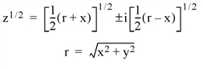

The SQRT function computes the square root of X .
Result = SQRT( X )
Returns the square root of X .
The value for which the square root is desired. If X is double-precision floating-point or complex, the result is of the same type. All other types are converted to single-precision floating-point and yield floating-point results. When applied to complex numbers, z = x + iy :

The ambiguous sign is taken to be the same as the sign of y . The result has the same structure as X .
This routine is written to make use of IDL’s thread pool , which can increase execution speed on systems with multiple CPUs. The values stored in the !CPU system variable control whether IDL uses the thread pool for a given computation. In addition, you can use the thread pool keywords TPOOL_MAX_ELTS, TPOOL_MIN_ELTS, and TPOOL_NOTHREAD to override the defaults established by !CPU for a single invocation of this routine. See Thread Pool Keywords for details.
To find the square root of 145 and store the result in variable S, enter:
S = SQRT(145)
|
Original |
Introduced |